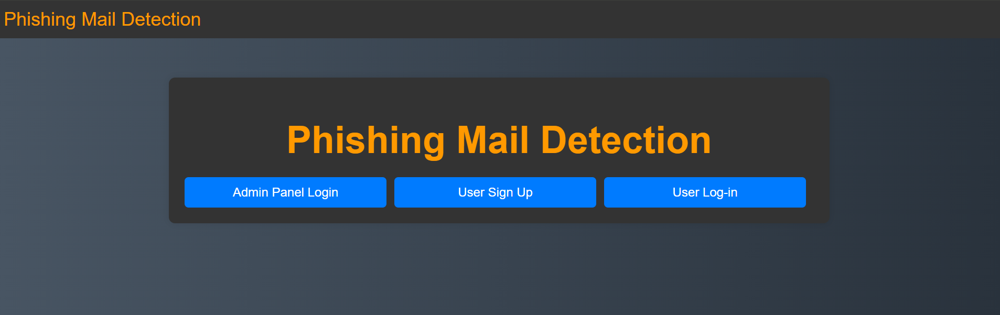
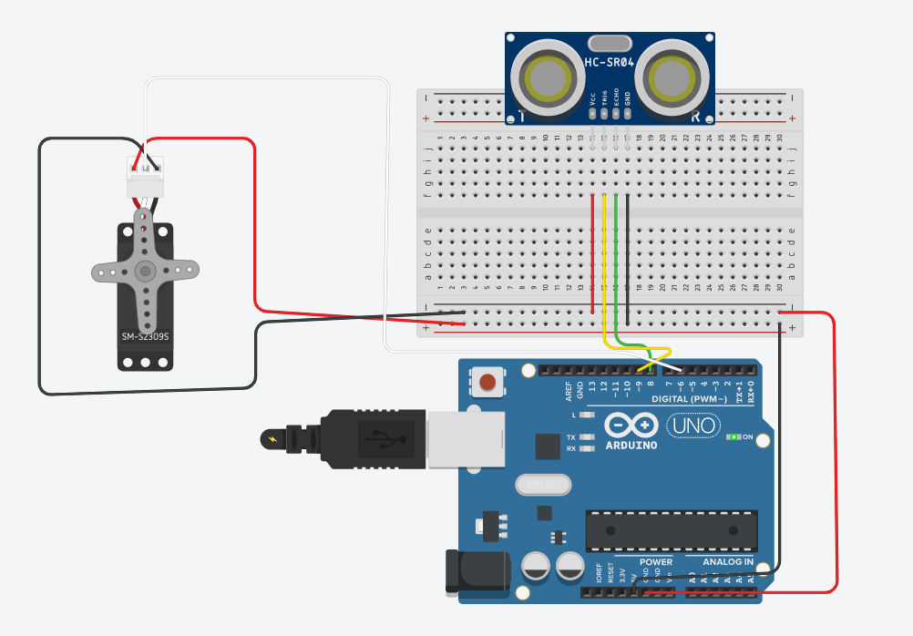
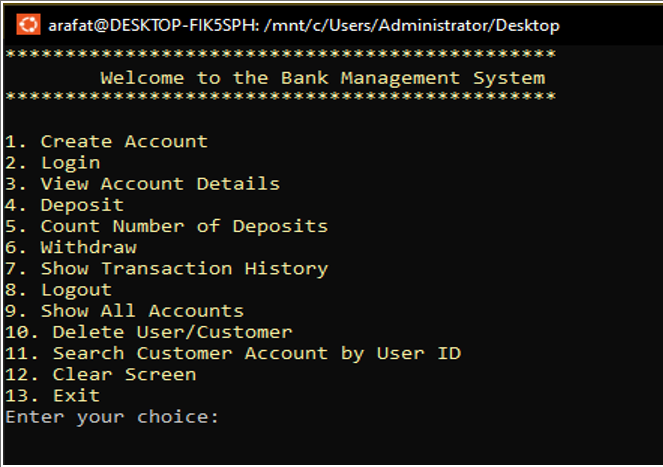

My Recent Projects

Moving Mouse
A dynamic web application with an interactive button that moves unpredictably, adding a playful challenge for users.

Phishing Mail Detection System
Using PHP for the web interface and Python for the detection algorithm, this system provides real-time phishing detection.

Servo Distance Indicator Project
Uses a servo motor and ultrasonic sensor to measure distance and adjust angles dynamically.

Bank Management System
A comprehensive software solution to automate various banking processes using scripting languages.